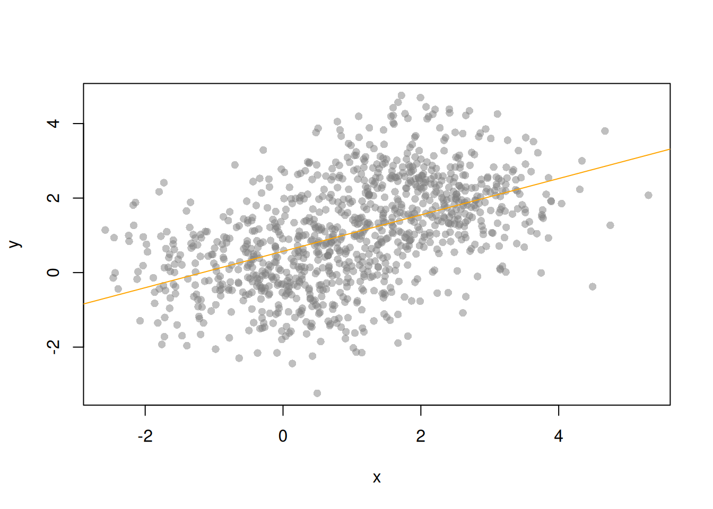
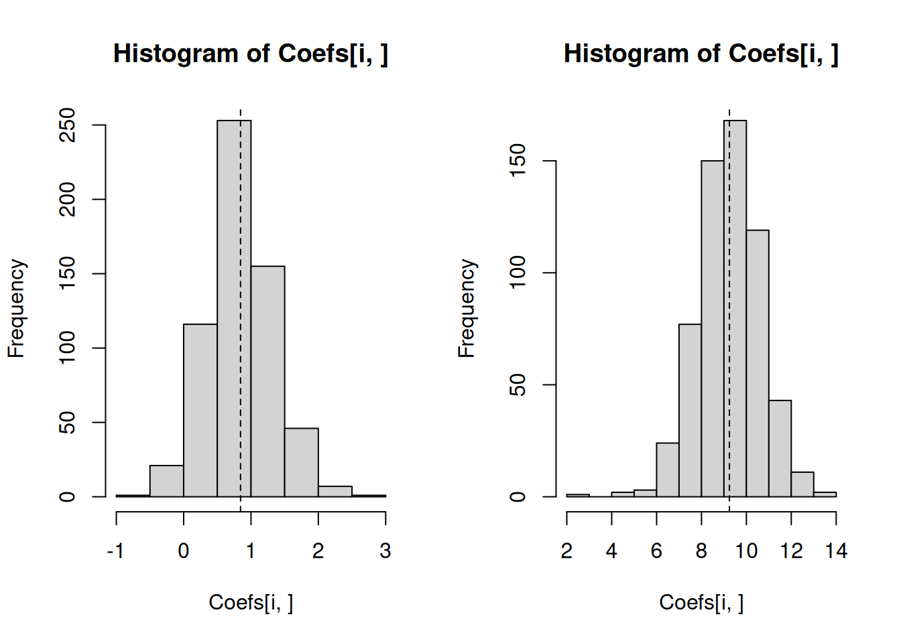
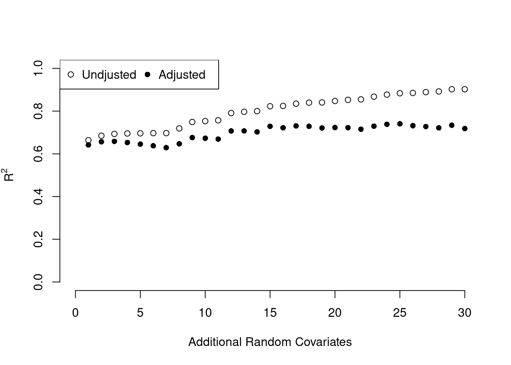

6 Ordinary Least Squares
6.1 Simple OLS (bivariate linear regression)
Model and objective \[ y_i=\alpha+\beta x_i+\epsilon_{i} \\ \epsilon_{i} = y_i - [\alpha+\beta x_i]\\ min_{\beta} \sum_{i=1}^{n} (\epsilon_{i})^2 \]
Point Estimates \[ \hat{\alpha}=\bar{y}-\hat{\beta}\bar{x} = \widehat{\mathbb{E}}[Y] - \hat{\beta} \widehat{\mathbb{E}}[X] \\ \hat{\beta}=\frac{\sum_{i}^{}(x_i-\bar{x})(y_i-\bar{y})}{\sum_{i}^{}(x_i-\bar{x})^2} = \frac{\widehat{Cov}[X,Y]}{\widehat{\mathbb{V}}[X]}\\ \hat{y}_i=\hat{\alpha}+\hat{\beta}x_i\\ \hat{\epsilon}_i=y_i-\hat{y}_i\\ \]
## Example 1 (Theoretical)
x <- seq(0,100)
e <- rnorm(length(x))
y <- .02*x + e
xy <- data.frame(x,y)
plot(y~x, xy, col=grey(.5,.5), pch=16)
reg <- lm(y~x, dat=xy)
reg##
## Call:
## lm(formula = y ~ x, data = xy)
##
## Coefficients:
## (Intercept) x
## -0.10715 0.02473abline(reg, col='orange')
## Example 2 (Theoretical)
N <- 1000
z <- rbinom(N,1,.5)
xy <- sapply(z, function(zi){
y <- rnorm(1,zi*2,1)
x <- rnorm(1,zi*2,1)
c(x,y)
})
xy <- data.frame(x=xy[1,],y=xy[2,])
plot(y~x, xy, col=grey(.5,.5), pch=16)
reg <- lm(y~x, dat=xy)
abline(reg, col='orange')
## Example 3 (Empirical)
## head(USArrests)
plot(Murder~UrbanPop, USArrests, col=grey(.5,.5), pch=16)
reg <- lm(Murder~UrbanPop, dat=USArrests)
abline(reg, col='orange')
Sums of Squared Errors \[ \underbrace{\sum\nolimits_{i}(y_i-\bar{y})^2}_\text{TSS}=\underbrace{\sum\nolimits_{i}(\hat{y}_i-\bar{y})^2}_\text{RSS}+\underbrace{\sum\nolimits_{i}\hat{\epsilon}^2}_\text{ESS}\\ R^2=\frac{RSS}{TSS}=1-\frac{ESS}{TSS} \]
Variability Estimates \[ \hat{\sigma}^2=\frac{1}{n-2}\sum_{i}\hat{\epsilon}^2\\ \hat{\sigma}^2_{\hat{\alpha}}=\hat{\sigma}^2\left[\frac{1}{n}+\frac{\bar{x}^2}{\sum_{i}(x_i-\bar{x})^2}\right]\\ \hat{\sigma}^2_{\hat{\beta}}=\frac{\hat{\sigma}^2}{\sum_{i}(x_i-\bar{x})^2}\\ \hat{\sigma}^2_{\hat{y}_j}=\hat{\sigma}^2\left[\frac{1}{n}+\frac{(x_j-\bar{x})^2}{\sum_{i}(x_i-\bar{x})^2}\right]\\ \]
For more details, see https://www.econometrics-with-r.org/4-lrwor.html
6.2 OLS (multiple linear regression)
Model and objective \[ y_i=\beta_0+\beta_1x_{i1}+\beta_2x_{i2}+\ldots+\beta_kx_{ik}+\epsilon_i\\ y=\textbf{X}\beta+\epsilon\\ min_{\beta} \sum_{i=1}^{n} (\epsilon_i)^2 \]
Point Estimates \[ \hat{\beta}=(\textbf{X}'\textbf{X})^{-1}\textbf{X}'y\\ \]
X <- USArrests[,c('Assault','UrbanPop')]
X <- as.matrix(cbind(1,X))
Y <- USArrests[,'Murder']
XtXi <- solve(t(X)%*%X)
Bhat <- XtXi %*% (t(X)%*%Y)
Bhat## [,1]
## 1 3.20715340
## Assault 0.04390995
## UrbanPop -0.04451047reg <- lm(Murder~Assault+UrbanPop, data=USArrests)
coef(reg)## (Intercept) Assault UrbanPop
## 3.20715340 0.04390995 -0.04451047Predictions and Projection Matrix \[ \hat{\epsilon}=y-X\hat{\beta}=y-X(X'X)^{-1}X'y\\ \hat{P}=X(X'X)^{-1}X'\\ \hat{P}y=X(X'X)^{-1}X'y=y-(y-X(X'X)^{-1}X'y)=y-\hat{\epsilon}=\hat{y}\\ \]
Ehat <- Y - X%*% Bhat
## Ehat
## resid(reg)
Pmat <- X%*%XtXi%*%t(X)
Yhat <- Pmat%*%Y
## Yhat
## predict(reg)Sums of Squared Errors \[ R^2_{\text{adj.}} = 1-\frac{n-1}{n-K}(1-R^2)\\ R^2 = \frac{RSS}{TSS}=1-\frac{ESS}{TSS} \]
ESS <- sum(Ehat^2)
TSS <- sum((Y-mean(Y))^2)
R2 <- 1 - ESS/TSS
summary(reg)$r.squared## [1] 0.66341566.2.1 Coefficient Variability
In general, note that the linear model has \[ \hat{\Sigma}_{\beta} = (X'X)^{-1} X' \widehat{\Omega} X (X'X)^{-1}.\\ \widehat{\Omega} = \begin{pmatrix} \hat{\sigma}_{1,1} & ... & \hat{\sigma}_{1,n}\\ & ... & \\ \hat{\sigma}_{n,1} & ... & \hat{\sigma}_{n,n} \end{pmatrix} \] Standard Errors are the diagonal: \(diag( \hat{\Sigma}_{\beta} )\)
Classical Linear Model (CLM) Independance: \(\hat{\sigma_{i,j}}=0\) Homoskedasticity: \[ diag( \widehat{\Omega} ) = [\hat{\sigma}^2, \hat{\sigma}^2, ..., \hat{\sigma}^2] \\ \hat{\sigma}^2=\frac{1}{n-K}\sum_{i}\hat{\epsilon}_i^2\\ \] IID Variability Estimates \[ \hat{\Sigma}_{\beta} = \hat{\sigma}^2 (X'X)^{-1}\\ \]
n <- nrow(X)
K <- ncol(X)
s <- sum( Ehat^2 )/(n-K)
Vhat <- s * XtXi
vcov(reg)## (Intercept) Assault UrbanPop
## (Intercept) 3.030349406 -1.532127e-03 -4.021339e-02
## Assault -0.001532127 2.096605e-05 -3.124864e-05
## UrbanPop -0.040213394 -3.124864e-05 6.949864e-04Reality There are common violations to the iid case. Heteroskedasticity: \[ diag( \widehat{\Omega} ) = [\widehat{\sigma^2_{1}}, \widehat{\sigma^2_{1}}, ..., \widehat{\sigma^2_{n}}]\\ \widehat{\sigma^2_{i}} = \hat{\epsilon_{i}}^2 \]
Autocorrelation Dependance: \(\sigma_{i,j}=f( dist(i,j) )\).
Cluster Dependance: \[\sigma_{i,j}= \begin{cases} \hat{\sigma}_{group1} & i,j \in \text{group } 1\\ ...\\ \hat{\sigma}_{groupG} & i,j \in \text{group } G \\ 0 & \text{otherwise} \\ \end{cases} \]
This is for a later course. (See https://cran.r-project.org/web/packages/sandwich/vignettes/sandwich.pdf and then https://cran.r-project.org/web/packages/sandwich/vignettes/sandwich-CL.pdf)
6.2.2 Hypothesis Testing
Is not to be done routinely. For one hypothesis, we can use a \(t\) test. For multiple, we can use an \(F\) test. \[ \hat{t}_{j} = \frac{\hat{\beta}_j- \beta_{0} }{\hat{\sigma}_{\ \hat{\beta}_j}}\sim t_{n-K}\\ \hat{F}_{q} = \frac{(ESS_{restricted}-ESS_{unrestricted})/q}{ESS_{unrestricted}/(n-K)} \sim F_{q,n-K} \]
Note that \(\hat{F}\) can be written in terms of unrestricted and restricted \(R^2\)
## Seperate tests each coef is 0
## Calculate standard errors, t–statistics, p-values
SEhat <- sqrt(diag(Vhat))
That <- Bhat/SEhat
## One Sided Test for P(t > That | Null)
Phat1 <- pt(That, n-K)
## Two Sided Test for P(t > That or t < -That | Null)
Phat2 <- 1-pt( abs(That), n-K) + pt(-abs(That), n-K)
Phat2## [,1]
## 1 7.173654e-02
## Assault 1.216319e-12
## UrbanPop 9.796088e-02summary(reg)##
## Call:
## lm(formula = Murder ~ Assault + UrbanPop, data = USArrests)
##
## Residuals:
## Min 1Q Median 3Q Max
## -4.5530 -1.7093 -0.3677 1.2284 7.5985
##
## Coefficients:
## Estimate Std. Error t value Pr(>|t|)
## (Intercept) 3.207153 1.740790 1.842 0.0717 .
## Assault 0.043910 0.004579 9.590 1.22e-12 ***
## UrbanPop -0.044510 0.026363 -1.688 0.0980 .
## ---
## Signif. codes: 0 '***' 0.001 '**' 0.01 '*' 0.05 '.' 0.1 ' ' 1
##
## Residual standard error: 2.58 on 47 degrees of freedom
## Multiple R-squared: 0.6634, Adjusted R-squared: 0.6491
## F-statistic: 46.32 on 2 and 47 DF, p-value: 7.704e-12## Joint test all 3 coefs are 0
Fhat <- (TSS - ESS)/ESS * (n-K)/3
1-pf(Fhat, 3, n-K)## [1] 3.522538e-11summary(reg)$fstatistic## value numdf dendf
## 46.31903 2.00000 47.00000summary(reg)##
## Call:
## lm(formula = Murder ~ Assault + UrbanPop, data = USArrests)
##
## Residuals:
## Min 1Q Median 3Q Max
## -4.5530 -1.7093 -0.3677 1.2284 7.5985
##
## Coefficients:
## Estimate Std. Error t value Pr(>|t|)
## (Intercept) 3.207153 1.740790 1.842 0.0717 .
## Assault 0.043910 0.004579 9.590 1.22e-12 ***
## UrbanPop -0.044510 0.026363 -1.688 0.0980 .
## ---
## Signif. codes: 0 '***' 0.001 '**' 0.01 '*' 0.05 '.' 0.1 ' ' 1
##
## Residual standard error: 2.58 on 47 degrees of freedom
## Multiple R-squared: 0.6634, Adjusted R-squared: 0.6491
## F-statistic: 46.32 on 2 and 47 DF, p-value: 7.704e-126.3 Coefficient Interpretation
The above procedure will always give us number, the question is how to interpret them.
If the data generating process is \[ y=X\beta + \epsilon\\ \mathbb{E}[\epsilon | X]=0, \] then we have a famous result that lets us attach a simple interpretation of OLS coefficients as unbiased estimates of the effect of X: \[ \hat{\beta} = (X'X)^{-1}X'y = (X'X)^{-1}X'(X\beta + \epsilon) = \beta + (X'X)^{-1}X'\epsilon\\ \mathbb{E}\left[ \hat{\beta} \right] = \mathbb{E}\left[ (X'X)^{-1}X'y \right] = \beta + (X'X)^{-1}\mathbb{E}\left[ X'\epsilon \right] = \beta \]
Generate a simulated dataset with 30 observations and two exogenous variables. Assume the following relationship: \(yi = \beta_0 + \beta_1 x_{1,i} + \beta_2 x_{2,i} + \epsilon_i\) where the variables and the error term are realizations of the following data generating processes (DGP):
N <- 30
B <- c(10, 2, -1)
x1 <- runif(N, 0, 5)
x2 <- rbinom(N,1,.7)
X <- cbind(1,x1,x2)
e <- rnorm(N,0,3)
Y <- X%*%B + e
dat <- data.frame(Y,X)
coef(lm(Y~x1+x2, data=dat))## (Intercept) x1 x2
## 9.514278 2.008898 -1.071302Simulate the distribution of coefficients under a correctly specified model. Interpret the average.
N <- 30
B <- c(10, 2, -1)
Coefs <- sapply(1:400, function(sim){
x1 <- runif(N, 0, 5)
x2 <- rbinom(N,1,.7)
X <- cbind(1,x1,x2)
e <- rnorm(N,0,3)
Y <- X%*%B + e
dat <- data.frame(Y,x1,x2)
coef(lm(Y~x1+x2, data=dat))
})
par(mfrow=c(1,3))
for(i in 1:3){
hist(Coefs[i,])
abline(v=mean(Coefs[i,]), col=1, lty=2)
abline(v=B[i], col=2)
}
Note that for joint tests, we look at the joint distribution of coefficients
library(ks)
Bjoint <- t(Coefs[2:3,])
fBjoint <- histde(Bjoint, binw=c(.2,.5))
plot(fBjoint, xlab='B2', ylab='B3')
Many economic phenomena are nonlinear, even when including potential transforms of \(Y\) and \(X\). Sometimes the OLS model may still be a good or even great approximation (how good depends on the research question). In any case, you are safe to interpret your OLS coefficients as “conditional correlations”. For example, examine the distribution of coefficients under this mispecified model. Interpret the average.
N <- 30
Coefs <- sapply(1:600, function(sim){
x1 <- runif(N, 0, 5)
x2 <- rbinom(N,1,.7)
e <- rnorm(N,0,3)
Y <- 10*x2 + 2*log(x1)^x2 + e
dat <- data.frame(Y,x1,x2)
coef(lm(Y~x1+x2, data=dat))
})
par(mfrow=c(1,2))
for(i in 2:3){
hist(Coefs[i,])
abline(v=mean(Coefs[i,]), col=1, lty=2)
}
6.4 Factor Variables
So far, we have discussed cardinal data where the difference between units always means the same thing: e.g., \(4 -3=3-2\). There are also factor variables
- Ordered: The difference between units means something, but not always the same thing. E.g., \(1st - 2nd \neq 2nd - 3rd\).
- Unordered: The difference between units does not mean something \(B-A =??\)
Sometimes Ordinal and Categorical data are called Ordinal and Categorical variables.
To analyze either factor, we often convert them into indicator variables or dummies; \(D_{c}=\mathbf{1}( Factor = c)\). One common case is if you have observations of individuals over time periods, then you may have two factor variables. An unordered factor that indicates who an individual is; for example \(D_{i}=\mathbf{1}( Individual = i)\), and an order factor that indicates the time period; for example \(D_{t}=\mathbf{1}( Time \in [month~ t, month~ t+1) )\). There are many other cases you see factor variables, including spatial ID’s in purely cross sectional data.
Be careful not to handle categorical data as if they were cardinal. E.g., generate city data with Leipzig=1, Lausanne=2, LosAngeles=3, … and then include city as if it were a cardinal number (that’s a big no-no). The same applied to ordinal data; PopulationLeipzig=2, PopulationLausanne=3, PopulationLosAngeles=1.
N <- 1000
x <- runif(N,3,8)
e <- rnorm(N,0,0.4)
fo <- factor(rbinom(N,4,.5), ordered=T)
fu <- factor(rep(c('A','B'),N/2), ordered=F)
dA <- 1*(fu=='A')
y <- (2^as.integer(fo)*dA )*sqrt(x)+ 2*as.integer(fo)*e
dat_f <- data.frame(y,x,fo,fu)With factors, you can still include them in the design matrix of an OLS regression \[ y_{it} = x_{it} \beta_{x} + d_{c}\beta_{c} \] When, as commonly done, the factors are modeled as being additively seperable, they are modelled as either “fixed” or “random” effects.
Simply including the factors into the OLS regression yields a “dummy variable” fixed effects estimator.
fe_reg0 <- lm(y~x+fo+fu, dat_f)
summary(fe_reg0)##
## Call:
## lm(formula = y ~ x + fo + fu, data = dat_f)
##
## Residuals:
## Min 1Q Median 3Q Max
## -40.226 -5.808 -0.387 5.868 37.415
##
## Coefficients:
## Estimate Std. Error t value Pr(>|t|)
## (Intercept) 20.9744 1.2463 16.829 < 2e-16 ***
## x 1.1489 0.2026 5.672 1.85e-08 ***
## fo.L 30.7334 1.1375 27.019 < 2e-16 ***
## fo.Q 12.5182 0.9986 12.535 < 2e-16 ***
## fo.C 3.9573 0.7510 5.269 1.68e-07 ***
## fo^4 1.0801 0.5518 1.957 0.0506 .
## fuB -23.6523 0.5768 -41.008 < 2e-16 ***
## ---
## Signif. codes: 0 '***' 0.001 '**' 0.01 '*' 0.05 '.' 0.1 ' ' 1
##
## Residual standard error: 9.101 on 993 degrees of freedom
## Multiple R-squared: 0.7426, Adjusted R-squared: 0.7411
## F-statistic: 477.6 on 6 and 993 DF, p-value: < 2.2e-16We can also compute averages for each group and construct a “between estimator” \[ \overline{y}_i = \alpha + \overline{x}_i \beta \] Or we can subtract the average from each group to construct a “within estimator”, \[ (y_{it} - \overline{y}_i) = (x_{it}-\overline{x}_i)\beta\\ \] that tends to be more computationally efficient, has corrections for standard errors, and has additional summary statistics.
library(fixest)
fe_reg1 <- feols(y~x|fo+fu, dat_f)
summary(fe_reg1)## OLS estimation, Dep. Var.: y
## Observations: 1,000
## Fixed-effects: fo: 5, fu: 2
## Standard-errors: Clustered (fo)
## Estimate Std. Error t value Pr(>|t|)
## x 1.14892 0.418653 2.74433 0.051675 .
## ---
## Signif. codes: 0 '***' 0.001 '**' 0.01 '*' 0.05 '.' 0.1 ' ' 1
## RMSE: 9.06864 Adj. R2: 0.741095
## Within R2: 0.031384Hansen Econometrics, Theorem 17.1: The fixed effects estimator of \(\beta\) algebraically equals the dummy variable estimator of \(\beta\). The two estimators have the same residuals.
Consistency is a great property, but only if the data generating process does in fact match the model. Many factor variables have effects that are not additively seperable.
reg1 <- feols(y~x|fo^fu, dat_f)
summary(reg1)## OLS estimation, Dep. Var.: y
## Observations: 1,000
## Fixed-effects: fo^fu: 10
## Standard-errors: Clustered (fo^fu)
## Estimate Std. Error t value Pr(>|t|)
## x 1.27096 0.567874 2.2381 0.052004 .
## ---
## Signif. codes: 0 '***' 0.001 '**' 0.01 '*' 0.05 '.' 0.1 ' ' 1
## RMSE: 3.6686 Adj. R2: 0.957459
## Within R2: 0.194625reg2 <- lm(y~x*fo*fu, dat_f)
summary(reg2)##
## Call:
## lm(formula = y ~ x * fo * fu, data = dat_f)
##
## Residuals:
## Min 1Q Median 3Q Max
## -10.3517 -1.4383 0.0133 1.5181 10.1531
##
## Coefficients:
## Estimate Std. Error t value Pr(>|t|)
## (Intercept) 12.7092 0.7911 16.066 < 2e-16 ***
## x 2.9514 0.1308 22.563 < 2e-16 ***
## fo.L 22.2574 2.3467 9.484 < 2e-16 ***
## fo.Q 6.4010 2.0269 3.158 0.00164 **
## fo.C 0.5691 1.4176 0.401 0.68815
## fo^4 -0.2009 0.9436 -0.213 0.83143
## fuB -12.3489 1.1644 -10.606 < 2e-16 ***
## x:fo.L 5.6451 0.3847 14.674 < 2e-16 ***
## x:fo.Q 2.4730 0.3339 7.407 2.78e-13 ***
## x:fo.C 0.7191 0.2363 3.044 0.00240 **
## x:fo^4 0.2180 0.1641 1.328 0.18434
## x:fuB -3.0068 0.1914 -15.711 < 2e-16 ***
## fo.L:fuB -21.2313 3.4724 -6.114 1.40e-09 ***
## fo.Q:fuB -4.0395 2.9925 -1.350 0.17736
## fo.C:fuB 0.8604 2.0715 0.415 0.67798
## fo^4:fuB 1.1858 1.3464 0.881 0.37871
## x:fo.L:fuB -5.7984 0.5659 -10.246 < 2e-16 ***
## x:fo.Q:fuB -2.8296 0.4897 -5.778 1.01e-08 ***
## x:fo.C:fuB -0.9292 0.3438 -2.702 0.00700 **
## x:fo^4:fuB -0.3896 0.2329 -1.673 0.09474 .
## ---
## Signif. codes: 0 '***' 0.001 '**' 0.01 '*' 0.05 '.' 0.1 ' ' 1
##
## Residual standard error: 2.65 on 980 degrees of freedom
## Multiple R-squared: 0.9785, Adjusted R-squared: 0.978
## F-statistic: 2343 on 19 and 980 DF, p-value: < 2.2e-16#reg2 <- feols(y~x*fo*fu|fo^fu, dat_f)With Random Effects, the factor variable is modelled as coming from a distribution that is uncorrelated with the regressors. This is rarely used in economics today, and mostly included for historical reasons and a few cases where fixed effects cannot be estimates.
6.5 More Literature
- https://www.econometrics-with-r.org/6-rmwmr.html
- https://www.econometrics-with-r.org/7-htaciimr.html
- https://bookdown.org/ripberjt/labbook/multivariable-linear-regression.html
- https://online.stat.psu.edu/stat462/node/137/
- https://book.stat420.org/
- Hill, Griffiths & Lim (2007), Principles of Econometrics, 3rd ed., Wiley, S. 86f.
- Verbeek (2004), A Guide to Modern Econometrics, 2nd ed., Wiley, S. 51ff.
- Asteriou & Hall (2011), Applied Econometrics, 2nd ed., Palgrave MacMillan, S. 177ff.
- https://online.stat.psu.edu/stat485/lesson/11/
For fixed effects, see